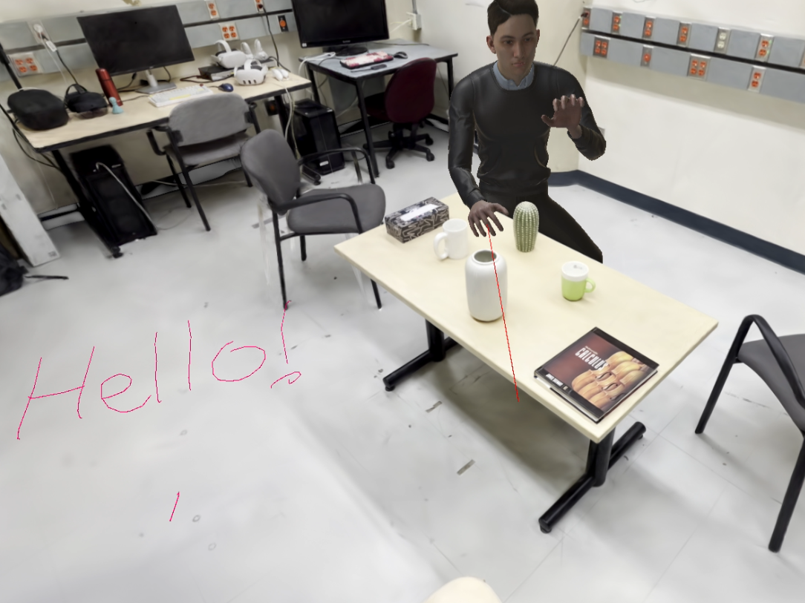

UIST '25
GaussianNexus: Room-Scale Real-Time AR/VR Telepresence with Gaussian Splatting
@inproceedings{huang2025gaussiannexus,
title={GaussianNexus: Room-Scale Real-Time AR/VR Telepresence with Gaussian Splatting},
author={Huang, Xincheng and Frehlich, Dieter and Xia, Ziyi and Gholami, Peyman and Xiao, Robert},
booktitle={Proceedings of ACM UIST '25},
year={2025}
}